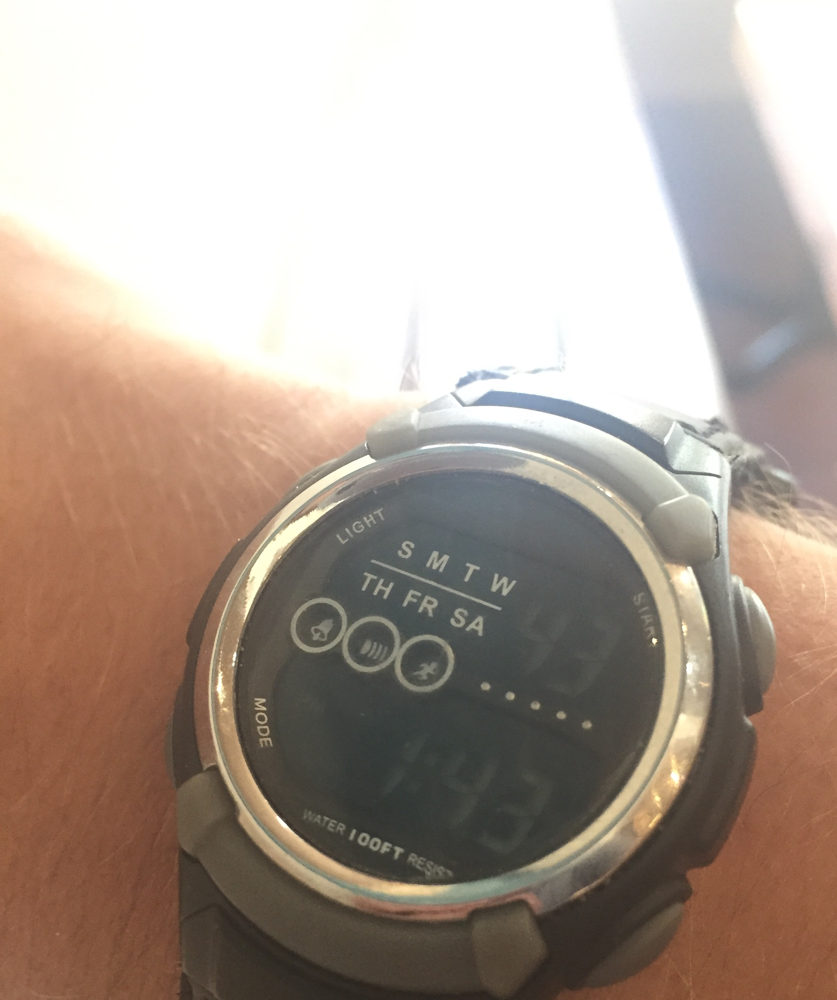

A Tether to Reality
by Tom
The sun will set in about an hour, the moon is trailing half a sky behind it. The La Sal mountains burst from the horizon about 50 miles to the south-east, a three-layer mesa sits to the west, ripped from the ground along a flat edge. To the south is the distinctive landscape of Arches National park, the sandstone fins crumpling into unusual shapes.
I turn from the exhausting wind, tired from a day of exploring the harsh desert, of trying to ignore the unrelenting sun. I'm not sure why the sun seems so strong here in Utah, could it be the 6,000 ft elevation? Is it the 34 degree lattitude? Or is it just all the more potent because of the hot and dry shade-free sandscape?
This makes me think of something Ed said about simply going to the mountains to avoid the heat of Denver. How long ago was that? How did I get here? I try to piece together a mental calender of the past week, and find it takes as much effort as 4-digit multiplication. The stress and the heat are discombabulating me-- what's going on right now? What do I do next? The wind swells as just at the moment I breath in and pushes me a step forward. Dry, sandy air in my mouth makes me wince, and I turn leeward, desparate for relief, only to be faced back into the glaring sun. My wince turns to a squint, and my empty stomach sends a pulse of panic to my brain. I go to crouch in the shadow of the car, and try to collect myself. I'm drifting out of control, I'm tired and confused. But then I remember: I have a watch!
Some amount of time in the past (about as temporally descriptive as I've been without the watch)-- the 15th or 16th maybe-- Mike and I stopped at a Walmart. Ah! That's right, it was in New Orleans, so... the 16th? I'm still not sure. Regardless, I purchased a 7 dollar digital watch, complete with an alarm and the date, and even the day of the week.
The memory of this is comforting, and I turn to check the time: 7:04. "Okay," I think, "That makes sense." Then bringing my wrist closer to my face, I press the glow button and discern the day of the week. "Saturday. Hmmm." That surprises me. I pause to let that settle into my brain; re-combobulating, as it were.
"Saturday," I assert, "Okay." Temporal bearing has returned, and with it some needed composure.
This re-association with time and the world is comforting. It tethers me to reality, bringing me closer to solid ground when the relentless movement takes its tole.